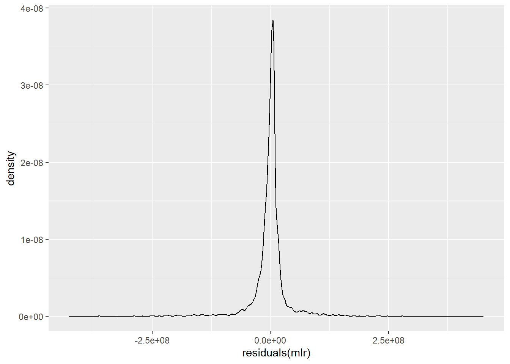

Linear Regression
This page features information about creating and interpreting regression models.
- Simple Linear Regression (math, programming, and interpretation)
- Multiple Linear Regression (math, programming, and interpretation)
Simple Linear Regression
The goal of simple linear regression is to figure out an equation of a line through the data in an attempt to find the relationship between feature and response to predict future values. The equation is of the form:
\(y_i = \alpha + \beta x_i + \epsilon_i\)
where
- \(y_i\) is the prediction at \(x_i\)
- \(\alpha\) is the “y-intercept”
- \(\beta\) is the “slope”
- \(\epsilon_i \sim N(0, \sigma^2)\), and each are independent
In vector (or set) form:
\(Y = \alpha + \beta X + \epsilon\)
where
- \(X\): the independent variable, the predictor, the explanatory variable, the feature
- \(Y\): the dependent variable, the response variable
- \(\epsilon\): the random deviation, random error – accounts for the fact that the world is uncertain and that there are random deviations around the true process.
The Expected Value of the Response Variable
Given \(Y = \alpha + \beta X + \epsilon\), what is \(E[Y]\)?
\(E[Y] = E[\alpha + \beta X + \epsilon]\)
\(= E[\alpha] + E[\beta X] + E[\epsilon]\)
\(= \alpha + \beta E[X] + 0\)
\(= \alpha + \beta X\)
Interpreting Parameters
\(\beta\): the slope of our true regression line represents the increase in our response from a unit increase in our feature.
Minimizing the Residuals
Given our data, \((x_1, y_1), \dots, (x_n, y_n)\) how do we minimize the residuals, \(\epsilon_i = y_i - (\alpha + \beta x_i)\)? In other words, how do we minimize the sum of the squared errors?
insert image of vertical line from regression line to point, label it e_i
Given:
- \(y_i\): the actual value of the data point
- \(\hat{y_i}\): the predicted value of the \(i^{th}\) data point
\(SSE = \sum\limits_{i=1}^{n} (y_i - \hat{y_i})^2\)
the point-estimates (single value estimated from the data) of the slope and intercept parameters are called the least-squares estimates, and are defined to be the values that minimize the SSE. The SSE can be thought of as a measure of how much variation in \(Y\) is left unexplained by the model.
How we Find the Parameter Estimates?
\(SSE = \sum\limits_{i=1}^{n} (y_i - \hat{y_i})^2\)
\(= \sum\limits_{i=1}^{n} (y_i - (\alpha - \beta x_i))^2\)
After making this substitution, compute…
- \(\frac{\partial SSE}{\partial \alpha} = 0\)
- \(\frac{\partial SSE}{\partial \beta} = 0\)
Which yield the following solutions, respectively…
- \(\alpha = \bar{y} - \beta \bar{x}\)
- \(\beta = \frac{\bar{xy} - \bar{x} \bar{y}}{\bar{x^2} - (\bar{x})^2}\)
Estimating the Variance
Given that the parameter \(\sigma^2\) determines the spread of the data about the true regression line, our estimate of the variance is \(\hat{\sigma}^2\), which is equivalent to:
\(\hat{\sigma}^2 = \frac{SSE}{n-2}\)
Coefficient of Determination
The coefficient of determination, \(R^2\), quantifies how well the model explains the data. \(R^2\) ranges from \(0\) to \(1\).
The regression sum of squares is given by:
\(SSR = \sum\limits_{i=1}^n (\hat{y_i} - \bar{y})^2\)
and gives a sense of how much variation in \(Y\) is explained by our model.
A quantitative measure of the total amount of variation in observed \(Y\) values is given by the total sum of squares:
\(SST = \sum\limits_{i=1}^n (y_i - \bar{y})^2\)
SST is what we would get if we used the mean of the data as our model.
Note that the sum of squared deviations about the least-squares line is smaller than the sum of squared deviations about nay other line.
\(SSE \leq SST\)
Include image of the three measures.
\(R^2\)
Therefore, the ratio of \(\frac{SSE}{SST}\) is the proportion of the total variation in the data (SST) that cannot be explained by the SLR model (SSE). So we define the coefficient of determination \(R^2\) to be the proportion of variance that can be explained by the model.
\(R^2\) has a magnitude between \(0\) and \(1\), with the closer to \(1\) be the better (i.e. the higher the number the more of the variation that can be explained by the model).
\(R^2 = 1 - \frac{SSE}{SST}\)
Slope Distribution
Distribution
\(\hat{\beta} \sim N(\beta, \frac{\sigma^2}{\sum_{i=1}^n (x_i - \bar{x})^2})\)
\(SE(\hat{\beta}) = \frac{\hat{\sigma}}{\sqrt{\sum_{i=1}^n (x_i - \bar{x})^2}}\)
Hypothesis Tests
\(H_0\): \(\beta = 0\)
\(H_A\): \(\beta \neq 0\)
Confidence Intervals
\(\hat{\beta} \pm t_{\alpha / 2, df = n-2} SE(\hat{\beta})\)
Note the statistic from the confidence interval, we use t-tests for the coefficients (i.e. individul coefficients for linear regression models). Specifically, used in finding if a feature has an effect on the response. In the case of a small enough p-value, we can reject the null hypothesis in favor of the alternative hypothesis which means there is statistical evidence that the associated feature (variable) has an effect on the response variable.
SUMMARY OF SLR
Main Formula
\(Y = \alpha + \beta X + \epsilon\)
Variance & Slope Distribution (\(\beta\)s)
\(\hat{\sigma}^2 = \frac{SSE}{n-2}\)
\(SE(\hat{\beta}) = \frac{\hat{\sigma}}{\sqrt{\sum_{i=1}^n (x_i - \bar{x})^2}}\)
CI for t-tests on \(\beta\)
\(\hat{\beta} \pm t_{\alpha / 2, df = n-2} SE(\hat{\beta})\)
Coefficient of Determination
| SSE | SSR | SST | \(R^2\) | |
|---|---|---|---|---|
| Description | Measure of how much variation in \(Y\) is left unexplained by the model | How much variation in \(Y\) is explained by our model | Total amount of variation in observed \(Y\) values (what we would get if we used the mean of the data as our model) | The proportion of variance that can be explained by the model |
| Formula | \(\sum\limits_{i=1}^{n} (y_i - \hat{y_i})^2\) | \(\sum\limits_{i=1}^n (\hat{y_i} - \bar{y})^2\) | \(\sum\limits_{i=1}^n (y_i - \bar{y})^2\) | \(1 - \frac{SSE}{SST}\) |
The closer to 1 \(R^2\) is, the better the model fits the data.
Workflow for Simple Linear Regression
- Plot the data as a scatter plot
- Does linearity seem appropriate?
- Compute and overlay best-fit line
- Consider assumptions in SLR
- Plot a histogram of the residuals (are they normal?): WANT NORMAL
- Plot the residuals against x (are they changing?): WANT RANDOM
Include Plots
Simple Linear Regression in R
The following functions are paramount in implementing and interpreting simple linear regression in R:
Load Library
Load Data (use txhousing from built in data)
Code
df <- txhousing
head(df)# A tibble: 6 × 9
city year month sales volume median listings inventory date
<chr> <int> <int> <dbl> <dbl> <dbl> <dbl> <dbl> <dbl>
1 Abilene 2000 1 72 5380000 71400 701 6.3 2000
2 Abilene 2000 2 98 6505000 58700 746 6.6 2000.
3 Abilene 2000 3 130 9285000 58100 784 6.8 2000.
4 Abilene 2000 4 98 9730000 68600 785 6.9 2000.
5 Abilene 2000 5 141 10590000 67300 794 6.8 2000.
6 Abilene 2000 6 156 13910000 66900 780 6.6 2000.Create a simple linear regression model to see if we can explain and predict volume from listings
Call:
lm(formula = volume ~ listings, data = df)
Residuals:
Min 1Q Median 3Q Max
-704067392 -27385680 -12084812 -951885 1686521981
Coefficients:
Estimate Std. Error t value Pr(>|t|)
(Intercept) -1501601.1 1750052.1 -0.858 0.391
listings 36990.0 258.1 143.319 <2e-16 ***
---
Signif. codes: 0 '***' 0.001 '**' 0.01 '*' 0.05 '.' 0.1 ' ' 1
Residual standard error: 130500000 on 7174 degrees of freedom
(1426 observations deleted due to missingness)
Multiple R-squared: 0.7411, Adjusted R-squared: 0.7411
F-statistic: 2.054e+04 on 1 and 7174 DF, p-value: < 2.2e-16From this summary, we can see that listings is a statistically significant factor (low p-value) and that the \(R^2\) for the model is somewhat acceptable at \(0.7411\). Although the intercept being negative does raise some concern, this would mean that for a time period with \(0\) listings, we would get a negative volume. The model also says that for each new listing, we can expect the volume to increase by \(36990\).
Multiple Linear Regression
We can extend the simple linear regression model to accommodate more variables. Note that we’ll now refer to \(\alpha\) as \(\beta_0\).
The main vector model can be represented as:
\(Y = \beta_0 + B_1 X_1 + \dots + B_p X_p + \epsilon\)
where for each of the \(n\) data points (each vector has the same number of data points), we assume for \(i = 1, \dots, n\), the \(i^{th}\) response variable is represented as:
\(y_i = \beta_0 + B_1 x_{i, 1} + \dots + B_p x_{i, p} + \epsilon_i\)
Matrix Algebra Applications & Solutions
If we have a perfectly square \(X\) matrix, then we can solve for \(\beta\) via:
\(Y = X \beta \rightarrow X^{-1} Y = \beta\).
However, we can almost guarantee that \(X\) will not be square. Look at this following linear algebra application:
Given a matrix \(A\) of any dimensions, both \(A^TA\) and \(AA^T\) will result in square matrices.
Therefore, given \(Y = X \beta\), we can solve via the following:
\((X^TX)^{-1}X^TY = \beta\)
Interpreting MLR
Given \(y_i = \beta_0 + B_1 x_{i, 1} + \dots + B_p x_{i, p} + \epsilon_i\), parameter \(\beta_k\) is the expected change in the response associated with a unit change in the value of feature \(x_k\) while all of the other features are held fixed.
Quantifying Goodness of Fit
\(R^2\) vs. \(R_a^2\)
Like in SLR, we can also calculate measures like SSE, SST, and \(R^2\) for MLR.
- \(SSE = \sum\limits_{i=1}^n (y_i - \hat{y_i})^2 = \sum\limits_{i=1}^n (y_i - (\beta_0 + B_1 x_{i, 1} + \dots + B_p x_{i, p}))^2\)
- \(SST = \sum\limits_{i=1}^n (y_i - \bar{y})^2\)
- \(R^2 = 1 - \frac{SSE}{SST}\)
Although we can calculate \(R^2\) for an MLR model, we run into the issue of multiple comparisons. The Adjusted \(R^2\), \(R_a^2\), is a better indicator of goodness of fit for MLR models. The adjusted version penalizes for having too many features that are not reducing SSE.
\(R_a^2 = 1 - \frac{SSE/(n-p-1)}{SST/(n-1)}\)
Covariance & Correlation
We can discover relationships among features by performing a correlation analysis. If the value of one feature changes, how will this affect the other features.
Traditionally, these measurements are calculated via:
- Covariance: \(Cov(X, Y) = E[(X - E[X])(Y -E[Y])]\)
- Correlation (Pearson’s): \(\rho(X, Y) = \frac{Cov(X, Y)}{\sqrt{Var(X) Var(Y)}}\)
However, in an MLR, we estimate these relationships using formulas analogous to the sample variance.
- Sample Covariance: \(S^2_{XY} = \frac{1}{n-1} \sum\limits_{i=1}^n (x_i - \bar{x})(y_i - \bar{y})\)
- Sample Correlation \(\hat{\rho}(X < Y) = \frac{S^2_{XY}}{\sqrt{S^2_{X}S^2_{Y}}}\)
where \(S^2_{X}\) and \(S^2_{Y}\) are the variances for \(X\) and \(Y\), respectively.
Individual t-tests
Suppose we want to test:
- \(H_0\): \(\beta_j = c\)
- \(H_A\): \(\beta_j \neq c\)
for some \(c \in \mathbb{R}\).
We would use a t-test with the test statistic:
\(t_{stat} = \frac{\hat{\beta_j} - c}{SE(\hat{\beta_j})}\)
Recall our CI for \(\beta\):
CI: \(\hat{\beta} \pm t_{\alpha/2, df = n - 2} \frac{\hat{\sigma}}{\sqrt{\sum_{i=1}^n(x_i - \bar{x})^2}}\)
\(= \hat{\beta} \pm t_{\alpha/2, df = n - 2} \hat{SE(\hat{\beta_j})}\)
Compare the test statistic with the t-test critical value (\(t_{\alpha/2, df = n - 2}\)) and proceed from there.
MLR in R: Individual t-test Output from summary
From same dataset used in SLR, create MLR. Note: we can specify all variables like
y ~ x1 + x2 + ... + xn, or we can call all of the variables besides the response variable by using..
Call:
lm(formula = volume ~ month + sales + listings, data = df)
Residuals:
Min 1Q Median 3Q Max
-425617453 -8326819 1919907 8285352 451201576
Coefficients:
Estimate Std. Error t value Pr(>|t|)
(Intercept) -7064965.5 1055382.2 -6.694 2.33e-11 ***
month -103150.3 141167.5 -0.731 0.465
sales 274509.7 1078.4 254.559 < 2e-16 ***
listings -12218.7 209.8 -58.251 < 2e-16 ***
---
Signif. codes: 0 '***' 0.001 '**' 0.01 '*' 0.05 '.' 0.1 ' ' 1
Residual standard error: 41190000 on 7172 degrees of freedom
(1426 observations deleted due to missingness)
Multiple R-squared: 0.9742, Adjusted R-squared: 0.9742
F-statistic: 9.035e+04 on 3 and 7172 DF, p-value: < 2.2e-16In the above summary printout, note that:
- Std. Error = \(SE(\hat{\beta})\)
- t value: \(t_{stat}\)
- Pr(>|t|): p-value
Note that the lm() and summary functions asume a hypothesis test of:
- \(H_0\): \(\beta_j = 0\)
- \(H_A\): \(\beta_j \neq 0\)
So, depending on the significance level we had set beforehand, we either reject the null hypothesis in favor of the alternative hypothesis or fail to reject the null hypothesis. In the case of a small enough p-value, we can reject the null hypothesis in favor of the alternative hypothesis which means there is statistical evidence that the associated feature (variable) has an effect on the response variable.
Type I Errors in Multiple t-tests
However, it is not a good idea to conduct several t-tests at a time!
Example: Suppose that we conduct 10 hypothesis tests at significance level \(\alpha = 0.05\). So, the probability of type 1 error is 0.05 for any individual test.
What is the probability of a type I error ocurring in at least one of these 10 tests?
\(P(\text{at least 1 type I error}) = 1 - P(\text{no type I error})\)
\(= 1 - (0.95)^{10}\)
\(\approx 0.40\)
Which is high!
Multicollinearity / Collinearity / Non-Identifiability
Multicollinearity, also known non-identifiability, can occur when there is linear dependence between columns of data. “Strict” non-identifiability occurs with true linear dependence and can be diagnosed with NA rows for MLR coefficients in a given summary, is rare. “Near” non-identifiability is less rare but can be tricky to diagnose. One method of diagnosing “near” collinearity is to recognize “fishy” coefficients, such as negatives when expecting positive.
This is a concern because linear dependence causes non-invertibility in the matrices \(X^TX\) and \(XX^T\) for any given matrix \(X\). This is disruptive in creating MLR models.
F-test
How do control the overall type I error rate when we need to test whether to drop several predictors from a model. We can use a simultaneous test, the F-test.
Consider two different models from a dataset with \(p\) features:
- Full Model: \(\Omega\): \(Y = \beta_0 + \beta_1 X_1 + \dots + \beta_p X_p\)
- Reduced Model: \(\omega\): \(Y = \beta_0 + \beta_1 X_1 + \dots + \beta_q X_q\), where \(q < p\)
We can consider testing the following hypothesis:
- \(H_0\): \(\omega\) is sufficient
- \(H_A\): \(\omega\) is not sufficient
The Full F-test
The null hypothesis is the most reduced model possible
The idea:
- \(H_0\): \(y_i = \beta_0 + \epsilon_i\)
- \(H_A\): at least 1 \(B_j \neq 0\), where \(j = 1, \dots, p\)
In other words, we want to check whether ALL coefficients are 0:
- \(H_0\): \(\beta_1 = \beta_2 = \dots = \beta_p = 0\)
- \(H_A\): \(B_k \neq 0\) for at least one value of \(k = 1, \dots, p\)
The null hypothesis in the MLR case says that there is no useful linear relationship between \(y\) and any of the \(p\) predictors.
The null hypothesis essentially states that there is no useful linear relationship between the response and any of the predictors. A small enough p-value suggests strong evidence against the null hypothesis, or in other words the model is better than the most reduced model possible. Useful in multiple linear regression (MLR) where the individual t-tests are suggesting evidence against the null hypothesis may result in type I errors.
\(F_{stat} = \frac{\frac{SST - SSE}{p}}{\frac{SSE}{n-p-1}}\)
where \(p = df_{SST} - df_{SSE}\)
The \(F_{stat}\) is a measure of how much better our model is than just using the mean.
If \(H_0\) were true, then we would expect to see \(F_{stat} \approx 1\). In other words, if we see an \(F_{stat}\) around 1, we will likely fail to reject the null hypothesis.
If \(H_A\) were true, then \(SSE < SST \rightarrow F_{stat} >> 1\)
The Partial F-test
Suppose we have the following setup:
- Full Model: \(y = \beta_0 + \beta_1 x_1 + \beta_2 x_2 + \beta_3 x_3 + \beta_4 x_4\)
- Reduced Model: \(y = \beta_0 + \beta_2 x_2 + \beta_4 x_4\)
Are the missing features important, or are we okay with the reduced model?
Hypothesis Test for the Partial F-test:
- \(H_0\): \(\beta_1 = \beta_3 = 0\)
- \(H_A\): at least one of \(\beta_1\), \(\beta_3\) \(\neq 0\)
Strategy: fit the full and reduced models, then determine if the difference in performance is real or just due to chance.
Let’s examine some measurements from the full and reduced models.
- \(SSE_{full}\): variation unexplained by the full model
- \(SSE_{reduced}\): variation unexplained by the reduced model
Intuitively, if \(SSE_{full}\) is much smaller than \(SSE_{reduced}\), the full model fits the data much better than the reduced model. Therefore, the appropriate test statistic should depend on the difference between the unexplained variation.
Give a full model with \(p\) features and a reduced model with \(k\) features:
\(F_{stat-partial} = \frac{(SSE_{reduced} - SSE_{full}) / p - k}{SSE_{full} / (n-p-1)} \sim F_{p-k, n-p-1}\)
with the rejection region: \(F \geq F_{\alpha, p-k, n-p-1}\)
Note that \(p-k\) comes from the differences in degrees of freedom:
\(df_{reduced} - df_{full} = (n-k-1) - (n-p-1) = p - k\)
Large \(F_{stat} \rightarrow\) Low P-Value from F-distribution \(\rightarrow\) Well Fitting Model
Principal of Parsimony: The principle that the most acceptable explanation of an occurrence, phenomenon, or event is the simplest, involving the fewest entities, assumptions, or changes.
We’re striving to create an MLR model which explains the variation in the data with relatively few features that are easily interpreted.
Feature Selection
The number of models to test can exponentially increase with the number of features.
Given \(p\) features, there are \(\sum\limits_{i=0}^p = 2^p\) possible models.
What are some ways we can reduce the impossible amount of models to try?
Forward Selection
A greedy algorithm for adding features.
- Fit a null model with an intercept but no slopes
- Fit p individual SLR models - one for each possible feature. Add to the null model the one that improves the performance the most, based on some measure (i.e. decreases SSE the most, increases F-statistic the most, etc.)
- Fit (p - 1) MLR models - one for each of the remaining features along with the feature we isolated from step 2. Add the one that improves model performance the most.
- Repeat until some stopping criterion is reached (i.e. some threshold SSE, or some fixed number of features, etc.)
Backward Selection
A greedy algorithm for removing features.
- Fit model with available features.
- Remove the feature with the largest p-value (i.e. the least significant feature).
- Repeat until some stopping criterion is reached (i.e. some threshold SSE, or some fixed number of features, etc.).
Further Interpretations and R Examples
Basic Interpretations
Let’s recreate our MLR from earlier:
Code
mlr <- lm(volume ~ month + sales + listings, data = df)summary
Code
summary(mlr)
Call:
lm(formula = volume ~ month + sales + listings, data = df)
Residuals:
Min 1Q Median 3Q Max
-425617453 -8326819 1919907 8285352 451201576
Coefficients:
Estimate Std. Error t value Pr(>|t|)
(Intercept) -7064965.5 1055382.2 -6.694 2.33e-11 ***
month -103150.3 141167.5 -0.731 0.465
sales 274509.7 1078.4 254.559 < 2e-16 ***
listings -12218.7 209.8 -58.251 < 2e-16 ***
---
Signif. codes: 0 '***' 0.001 '**' 0.01 '*' 0.05 '.' 0.1 ' ' 1
Residual standard error: 41190000 on 7172 degrees of freedom
(1426 observations deleted due to missingness)
Multiple R-squared: 0.9742, Adjusted R-squared: 0.9742
F-statistic: 9.035e+04 on 3 and 7172 DF, p-value: < 2.2e-16anova
Code
anova(mlr)Analysis of Variance Table
Response: volume
Df Sum Sq Mean Sq F value Pr(>F)
month 1 1.5469e+17 1.5469e+17 91.194 < 2.2e-16 ***
sales 1 4.5387e+20 4.5387e+20 267563.442 < 2.2e-16 ***
listings 1 5.7558e+18 5.7558e+18 3393.153 < 2.2e-16 ***
Residuals 7172 1.2166e+19 1.6963e+15
---
Signif. codes: 0 '***' 0.001 '**' 0.01 '*' 0.05 '.' 0.1 ' ' 1The anova table gives us:
-
Df: degrees of freedom -
Sum Sq: SSE (for Residuals) -
Sum Sq: SST (total column) -
Mean Sq: SSR (for features)
residuals
Code
ggplot() +
geom_density(aes(residuals(mlr)))
Don’t run, but this will return the predicted response values: fitted(mlr)
F-tests
Let’s check out the F-tests.
Code
summary(mlr)
Call:
lm(formula = volume ~ month + sales + listings, data = df)
Residuals:
Min 1Q Median 3Q Max
-425617453 -8326819 1919907 8285352 451201576
Coefficients:
Estimate Std. Error t value Pr(>|t|)
(Intercept) -7064965.5 1055382.2 -6.694 2.33e-11 ***
month -103150.3 141167.5 -0.731 0.465
sales 274509.7 1078.4 254.559 < 2e-16 ***
listings -12218.7 209.8 -58.251 < 2e-16 ***
---
Signif. codes: 0 '***' 0.001 '**' 0.01 '*' 0.05 '.' 0.1 ' ' 1
Residual standard error: 41190000 on 7172 degrees of freedom
(1426 observations deleted due to missingness)
Multiple R-squared: 0.9742, Adjusted R-squared: 0.9742
F-statistic: 9.035e+04 on 3 and 7172 DF, p-value: < 2.2e-16Here we notice that the individual t-tests are statistically significant, however be wary of type I errors. However, we can notice that the t-test associated with month is not significant, suggesting there is no evidence that parameter isn’t zero. Let’s check out the F-stat, which does have a high value with a low p-value associated with it. This is indicative of strong evidence that at least one of the \(B_{k}\)s are not \(0\).
Let’s test a model removing month with a partial f-test.
Code
mlr_reduced <- lm(volume ~ sales + listings, data = df)Code
anova(mlr_reduced, mlr)Analysis of Variance Table
Model 1: volume ~ sales + listings
Model 2: volume ~ month + sales + listings
Res.Df RSS Df Sum of Sq F Pr(>F)
1 7173 1.2167e+19
2 7172 1.2166e+19 1 9.0568e+14 0.5339 0.465The p-value for the f-test is very large, indicate that we don’t have enough evidence to reject the null hypothesis, which means that the reduced model is likely sufficient.